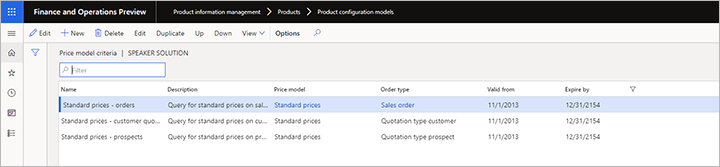

Attributbasierte Verkaufspreise bei einschränkungsbasierter Produktkonfiguration
In diesem Thema wird beschrieben, wie Sie Verkaufspreismodelle mit Verkaufspreisen erstellen, die auf Komponenten und Attributen basieren und nicht auf der physischen Stückliste und der Route. Sie können für jedes Produktkonfigurationsmodell mehrere Verkaufspreismodelle erstellen.
Festlegen relevanter Parameter für die Verwaltung von Produktinformationen
Bevor Sie mit dem Erstellen Ihrer Preismodelle beginnen, müssen Sie eine Standardwährung definieren, die beim Erstellen Ihrer Verkaufspreismodelle verwendet wird. Sie können auch auswählen, ob für alle Auftrags- oder Bestellpositionen eine Microsoft Excel-Datei mit einer Preisaufschlüsselung angehängt werden soll. Mit der Preisaufschlüsselung können Sie Ihren Kunden detailliert aufzeigen, wie sich ein bestimmter Verkaufspreis für ein konfiguriertes Produkt zusammensetzt.
So legen Sie Ihre Standardwährung fest:
Wechseln Sie zu Produktinformationsverwaltung > Einrichten > Parameter für Produktinformationsverwaltung.
Öffnen Sie die Registerkarte Details zum einschränkungsbasierten Produktkonfigurationsmodell.
Öffnen Sie die Dropdownliste Standardwährung und wählen Sie Ihre Währung aus.

Wenn Sie für alle Auftrags- oder Bestellpositionen eine Excel-Datei mit einer Preisaufschlüsselung anhängen möchten, legen Sie im Bereich Preismodell die Option Anhängen auf Ja fest.
Erstellen Ihrer Verkaufspreismodelle
So erstellen ein Verkaufspreismodell:
- Wechseln Sie zu Produktinformationsverwaltung > Produkte > Produktkonfigurationsmodelle.
- Wählen Sie das Ziel-Produktkonfigurationsmodell aus.
- Öffnen Sie im Aktivitätsbereich die Registerkarte Modell und wählen Sie aus der Gruppe Einrichten die Option Preismodelle aus.
- Die Seite Preismodelle wird angezeigt.
- Wählen Sie ein Preismodell aus oder fügen Sie dem Raster ein neues hinzu.
- Wählen Sie Bearbeiten aus, um die Bearbeitungsseite für Ihr ausgewähltes Modell zu öffnen, auf der folgende Funktionen zu finden sind:
- In der Kopfzeile des Formulars wird die Standardwährung angezeigt und Sie können neue Währungen für Ihre Preiseinstellung hinzufügen.
- Im linken Bereich werden alle Komponenten und Benutzeranforderungen des Produktmodells angezeigt. Jeder Knoten im Produktmodellbaum kann über einen Basispreisausdruck und eine optionale Anzahl von Ausdrucksregeln verfügen. Eine Ausdrucksregel besteht aus einer Bedingung und einem Ausdruck. Jede Ausdrucksregel deckt eine Produktoption ab, mit deren Hilfe der Preis des Produkts gesteuert werden kann.
- Wenn Sie Ihre Bedingungen und Ausdrücke erstellen, stehen Ihnen dieselben Operatoren zur Verfügung wie für Berechnungen in einem Produktmodell. Der Ausdruckseditor unterstützt auch Bedingungen und Ausdrücke.
- Wählen Sie in der linken Spalte einen Knoten aus und verwenden Sie dann die im vorherigen Schritt beschriebenen Funktionen, um Preisregeln für diesen Knoten festzulegen (siehe auch das nach diesem Verfahren bereitgestellte Beispiel). Wiederholen Sie diesen Schritt nach Bedarf für jeden Knoten.
Das folgende Beispiel zeigt einen festen Grundpreis von 899,95 EUR an, der abhängig von der vom Kunden gewählten Konfiguration durch eine oder mehrere der folgenden fünf Ausdrucksregeln geändert werden kann:
- Für weiße Gehäuseoberfläche 59,95 EUR abziehen.
- Für Eckenschutz 35,95 EUR addieren.
- Für Metallgitter vorne 89,95 EUR addieren.
- Für Rosenholzgehäuse 119,95 EUR addieren.
- Für jede Einheit an Lautsprecherhöhe 12,95 EUR addieren.

Hinzufügen von Support für mehrere Währungen
Wenn ein konfigurierbares Produkt verkauft wird, prüft das System, ob die Preise explizit in der Währung des Kunden festgelegt wurden. Falls ja, werden die expliziten Werte verwendet. Falls nicht, verwendet das System die für das Vertriebsunternehmen festgelegten Wechselkurse, um den Standardwährungswert in die Währung des Kunden umzurechnen.
So fügen Sie explizite Preise in einer zusätzlichen Währung hinzu:
Öffnen Sie die Bearbeitungsseite für Ihr Preismodell wie in Erstellen Ihrer Verkaufspreismodelle beschrieben.
Wählen Sie die Schaltfläche Hinzufügen in der Kopfzeile des Preismodells aus, um das Dropdown-Dialogfeld Währungen zu öffnen, in dem die verfügbaren Währungen aufgelistet sind.
Wählen Sie im Dropdown-Dialogfeld Währungen die Währung aus, die Sie hinzufügen möchten, und wählen Sie dann OK aus.
Die Dropdownliste Aktuelle Währung enthält jetzt die Währung, die Sie gerade hinzugefügt haben, sowie alle anderen Währungen, die möglicherweise zuvor hinzugefügt wurden. Wählen Sie Ihre neue Währung aus und beachten Sie, dass das Raster im Bereich Ausdrucksregeln jetzt zwei Ausdrucksfelder enthält:
- Ausdruck: Zeigt den Ausdruck (oder den konstanten Wert) zum Ermitteln des Preises unter Verwendung der aktuell für Aktuelle Währung ausgewählten Währung an.
- Standardausdruck: Zeigt den Ausdruck (oder den konstanten Wert) zum Ermitteln des Preises unter Verwendung der (im Feld Standardwährung angezeigten) Standardwährung an.
Note
Das Feld Bedingung für die Ausdrucksregeln „gehört“ der Standardwährung. Das bedeutet, dass Sie die Bedingung für andere Währungen nicht ändern können. Sie können auch keine neuen Ausdrucksregeln hinzufügen, während für Aktuelle Währung eine andere Währung als die Standardwährung ausgewählt ist.
Bearbeiten Sie die Werte in der Spalte Ausdruck je nach Bedarf für die aktuelle Währung.
Im folgenden Beispiel ist EUR die Standardwährung und USD wurde als zusätzliche Währung hinzugefügt.

Note
Sie können keine Ausdrucksregeln hinzufügen, die für eine nicht standardmäßige Währung eindeutig sind. Um Ausdrucksregeln zu erstellen, die nur für eine andere Währung als die Standardwährung relevant sind, legen Sie für den Preisausdruck für die Standardwährung den Wert „Null“ fest. Legen Sie dann den entsprechenden Ausdruck für die nicht standardmäßige Währung fest.
Testen Ihres Preismodells
Um zu testen, wie die Verkaufspreise in einer Konfigurationssitzung funktionieren, öffnen Sie die Bearbeitungsseite für Ihr Preismodell wie in Erstellen Ihrer Verkaufspreismodelle beschrieben und wählen Sie dann im Aktivitätsbereich Test aus. Das Dialogfeld Produktmodell testen wird angezeigt, in dem Sie Folgendes tun können:
- Verwenden Sie die hier angebotenen Konfigurationseinstellungen, um Produktoptionen auszuwählen und dann zu beobachten, wie sie sich auf den für Preis und Versanddatum angezeigten Wert auswirken.
- Wählen Sie Preisaufschlüsselung anzeigen aus, um ein Excel-Dokument herunterzuladen, das alle Details zur Kalkulation des Preises enthält.

Die heruntergeladene Tabelle zeigt für jedes aktive Preiselement sowohl den absoluten Wert als auch den Beitrag als Prozentsatz an. Wenn Sie die Preismodelloption Anhängen auf der Seite Parameter für Produktinformationsverwaltung ausgewählt haben, wird diese Excel-Tabelle an die Auftrags- oder Bestellposition angehängt.

Einrichten der Auswahlkriterien für Preismodelle
Wenn Ihre Preismodelle fertiggestellt sind, müssen Sie mindestens ein Auswahlkriterium festlegen, um das Preismodell auswählen zu können, wenn Sie ein Angebot oder eine Bestellung konfigurieren. Hierfür richten Sie eine oder mehrere Abfragen ein. In Kombination mit passenden Verkaufspreismodellen bieten die Abfragen eine große Flexibilität bei der Ausrichtung der Verkaufspreise für bestimmte Kunden, Regionen, Zeiträume und andere Kriterien.
So richten Sie die Auswahlkriterien für Preismodelle ein:
Wechseln Sie zu Produktinformationsverwaltung > Produkte > Produktkonfigurationsmodelle.
Wählen Sie das Ziel-Produktkonfigurationsmodell aus.
Öffnen Sie im Aktivitätsbereich die Registerkarte Modell und wählen Sie aus der Gruppe Einrichten die Option Preismodellkriterien aus. Die Seite Preismodellkriterien wird angezeigt.
Wenn die benötigte Abfragezeile noch nicht vorhanden ist, wählen Sie im Aktivitätsbereich Neu aus, um eine neue Zeile zum Raster hinzuzufügen, und nehmen Sie die folgenden Einstellungen vor:
- Name: Geben Sie einen Namen für diese Zeile ein.
- Beschreibung: Beschreiben Sie kurz die Abfrage und wofür sie verwendet wird.
- Preismodell: Wählen Sie ein Preismodell aus (aus dem aktuellen Konfigurationsmodell), das von der Abfrage beim Auslösen angewendet wird.
- Auftragstyp: Wählen Sie die Art des Auftrags aus, für den die Abfrage gelten soll.
- Gültig ab: Geben Sie den ersten Tag an, ab dem die Abfrage angewendet werden soll.
- Ablaufzeitpunkt: Geben Sie das Datum des letzten Tages an, an dem die Abfrage angewendet werden soll.

Wählen Sie die Zeile für die Abfrage aus, die Sie definieren möchten, und wählen Sie dann die Option Bearbeiten im Aktivitätsbereich aus. Der Abfragedesigner wird geöffnet. Er funktioniert wie die meisten Abfragedesigner in Supply Chain Management. Verwenden Sie ihn, um die Bedingungen zu definieren, unter denen das Preismodell für die ausgewählte Zeile angewendet werden soll.
Wiederholen Sie die Schritte 4 bis 5 für jede erforderliche Abfrage.
Tip
Sie können Zeit sparen, indem Sie eine vorhandene Zeile kopieren, die bereits einer neuen Zeile ähnelt, die Sie hinzufügen müssen. Wählen Sie hierfür eine Zielzeile aus und wählen Sie dann im Aktivitätsbereich Duplizieren aus.
Wenn Sie mit dem Einrichten Ihrer Kriterien fertig sind, ordnen Sie sie in der Liste Preismodellkriterien in der richtigen Reihenfolge an. Um die Position einer Zeile zu ändern, wählen Sie die Zeile aus und wählen Sie dann im Aktivitätsbereich Nach oben oder Nach unten aus.
Important
Zur konfigurierten Zeit beginnt das System am Anfang der Liste mit der Suche und verwendet die erste Abfrage, die mit den Daten im Angebot oder in der Auftragsposition übereinstimmt. Aus diesem Grund müssen Sie Ihre spezifischsten Abfragen an die Spitze stellen. Wenn Sie eine allgemeine Abfrage ganz oben in der Liste platzieren, wird diese selbst dann verwendet, wenn sich weiter unten in der Liste möglicherweise eine Abfrage befindet, die exakt auf den Kunden oder Interessenten der Konfiguration abzielt.
Siehe attributbasierte Verkaufspreise für die Produktmodellversion
Der letzte Schritt besteht darin, attributbasierte Verkaufspreise für die Produktmodellversion anzugeben. Aktion:
- Wechseln Sie zu Produktinformationsverwaltung > Produkte > Produktkonfigurationsmodelle.
- Wählen Sie das Ziel-Produktkonfigurationsmodell aus.
- Öffnen Sie im Aktivitätsbereich die Registerkarte Modell und wählen Sie aus der Gruppe Produktmodelldetails die Option Versionen aus.
- Die Seite Versionen wird angezeigt. Stellen Sie sicher, dass Preis auf Attributbasiert festgelegt ist.